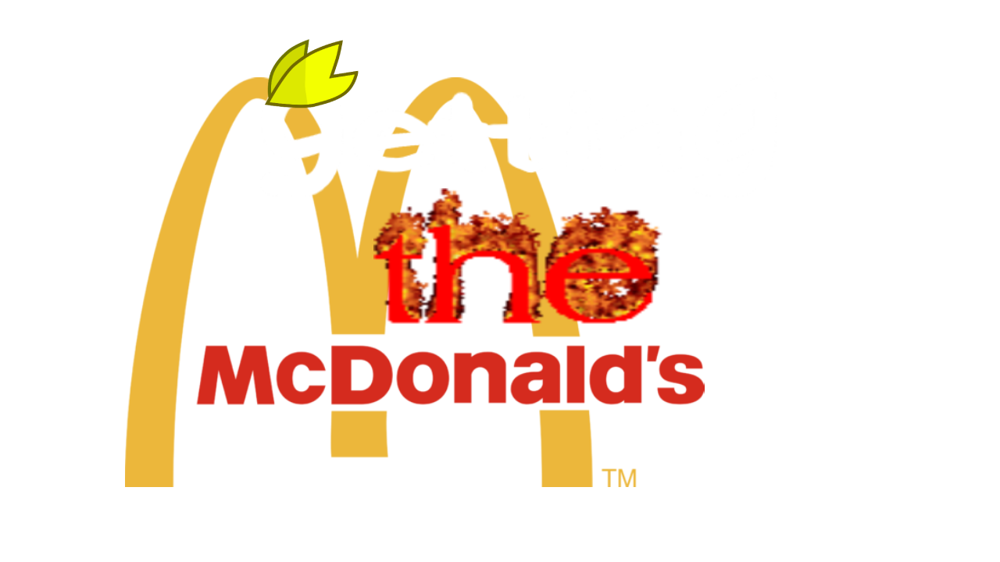

Getting the McDonalds is a short Henry Stickmin-like game that Pama decided to make for some reason. It follows Droid and his misadventures attempting to get his hands on a Happy Meal. I dunno either bro (Please don't sue us McDonalds)